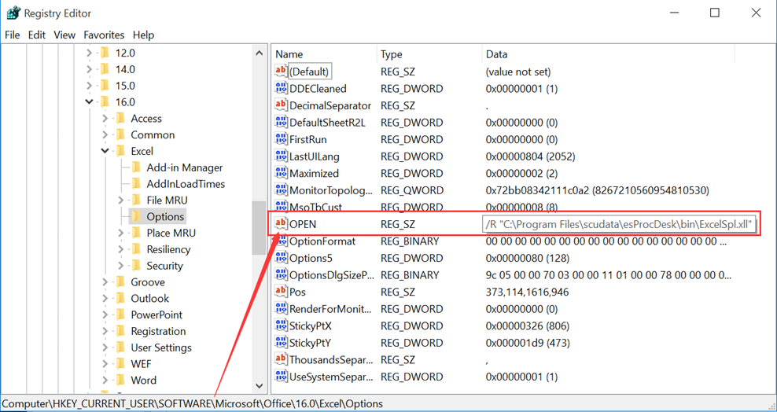

This is an esPoc Enterprise edition feature.
This item is located under Remote Service menu. It lets you connect to the cloud storage platform. Once the connection succeeds, you can perform operations on files in storage buckets on the cloud storage platform through Qfile, Qmove and Qload functions in a SPL script.

¡¾Default storage service¡¿: The Cloud Storage Service allows you to connect to multiple cloud storage services at the same time. When the above functions, such as Qfile(), are used in IDE, the system will connect to the cloud storage platform selected after ¡°Default storage service¡± for the computation. If the property is left blank, won¡¯t connect to any cloud storage platform.